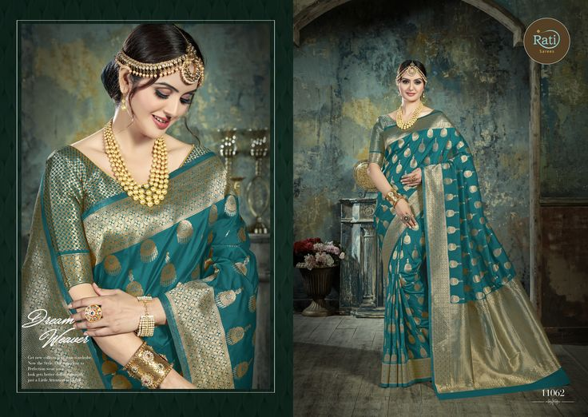
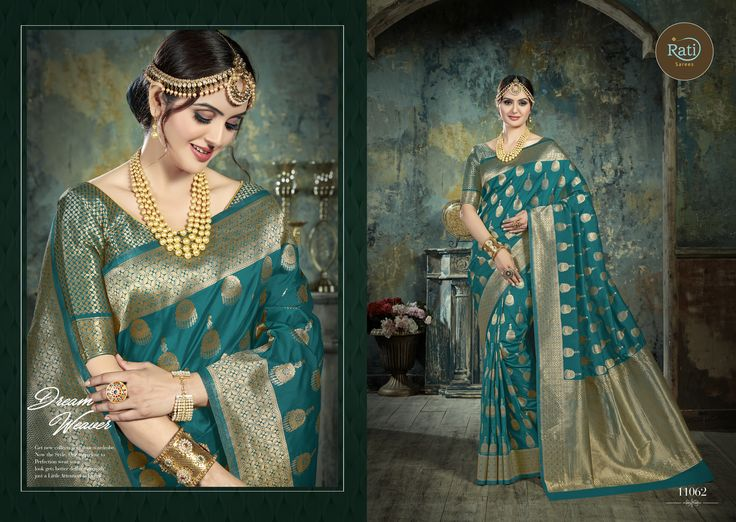

Festivals of Uttar Pradesh
With its 40 grand festivals and about 2,250 fairs, Uttar Pradesh is considered among the most colourful state of the country. All the occasions are celebrated with enthusiasm and excitement. These are the occasions when artists exhibit their talent in the most professional manner.
Barsana Holi
Holi is a colorful festival popular in most parts of the country, and Uttar Pradesh also observes the festival of Holi with a lot of enthusiasm. Barsana Holi, on the other hand, is an innovative style of celebrating Holi, particularly in the small town of Barsana of Uttar Pradesh. Barsana is the birthplace of Radha, the beloved of Lord Krishna, and is in the district of Mathura.

Kumbh Mela
Kumbh Mela or Kumbha Mela is a major pilgrimage and festival in Hinduism. It is celebrated in a cycle of approximately 12 years, to celebrate every revolution Brihaspati (Jupiter) completes, at four river-bank pilgrimage sites: Prayagraj (Ganges-Yamuna-Sarasvati rivers confluence), Haridwar (Ganges), Nashik (Godavari), and Ujjain (Shipra).
Ramlila
Ramlila is a traditional folk re-enactment of the life of Lord Rama, a significant deity in Hinduism, as described in the ancient Indian epic, the Ramayana. Ramlila performances are held in various parts of India during the festival of Navaratri, which typically occurs in September or October.

Ram-Navmi Mela
Ram Navami is a Hindu festival that celebrates the birth of Lord Rama, one of the incarnations of the god Vishnu. It falls on the ninth day of Chaitra, the first month of the Hindu lunar calendar, which typically corresponds to March or April in the Gregorian calendar. Ram Navami is an important religious event for Hindus, and it is celebrated with great devotion and enthusiasm.
Krishna-Janmashtami
Krishna Janmashtami, also known as Janmashtami or Gokulashtami, is a major Hindu festival celebrated to mark the birth of Lord Krishna, who is considered one of the most revered and popular deities in Hinduism. It typically falls on the eighth day (Ashtami) of the Krishna Paksha (dark fortnight) in the month of Bhadrapada, which corresponds to August or September in the Gregorian calendar.
Ganga Dussehra
Ganga Dussehra is a Hindu festival that celebrates the descent of the holy river Ganges, also known as the Ganga, to the Earth. This festival typically falls on the 10th day (Dashami) of the bright half of the Hindu lunar month of Jyeshtha .Ganga Dussehra marks the beginning of the Ganga's journey from the heavens to the Earth, as it is believed to have originated in the matted locks of Lord Shiva.
Deepavali
Deepavali, or Diwali, is one of the most popular festivals in India. Northern India, especially Uttar Pradesh, celebrates this occasion with a lot of pomp and gaiety. The festival of lights, Diwali, is a gala affair that is a celebration of devotion and joy in houses across the nation. Uttar Pradesh puts in a lot of thought while celebrating this jolly tradition.

 
